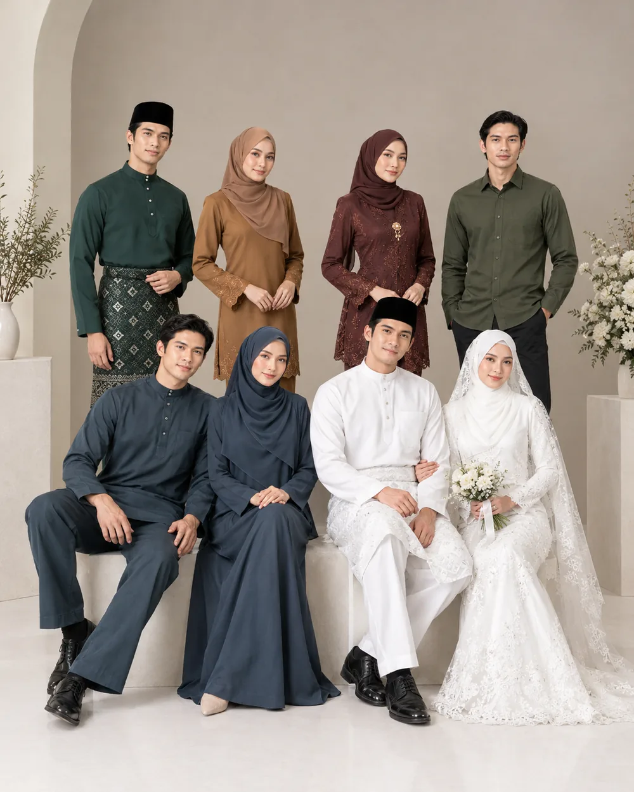
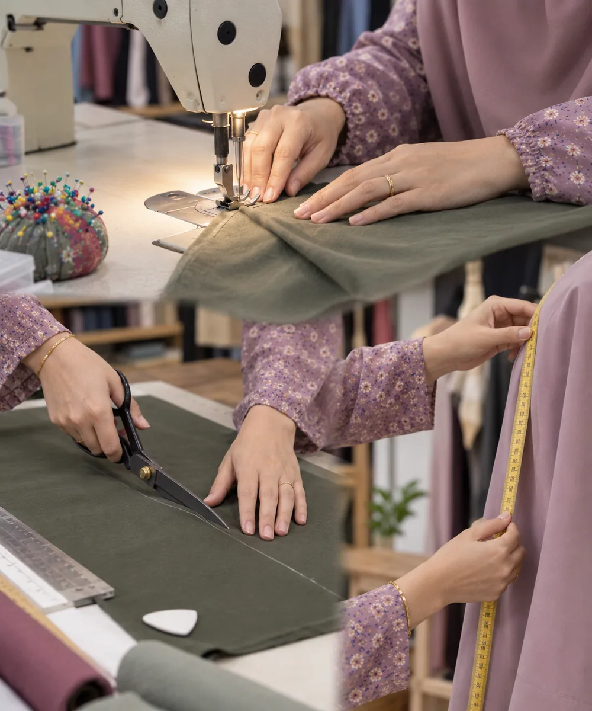
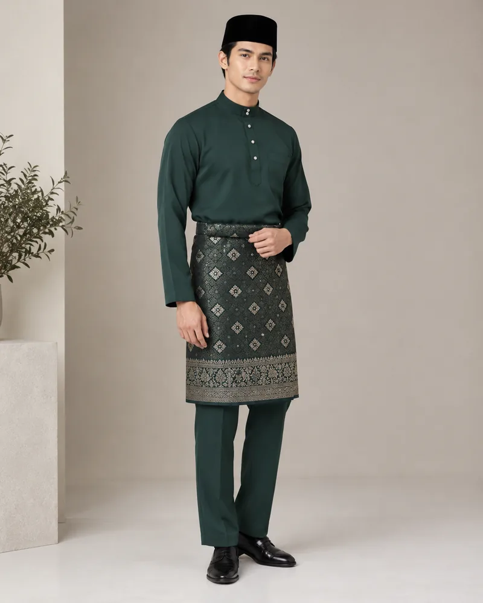
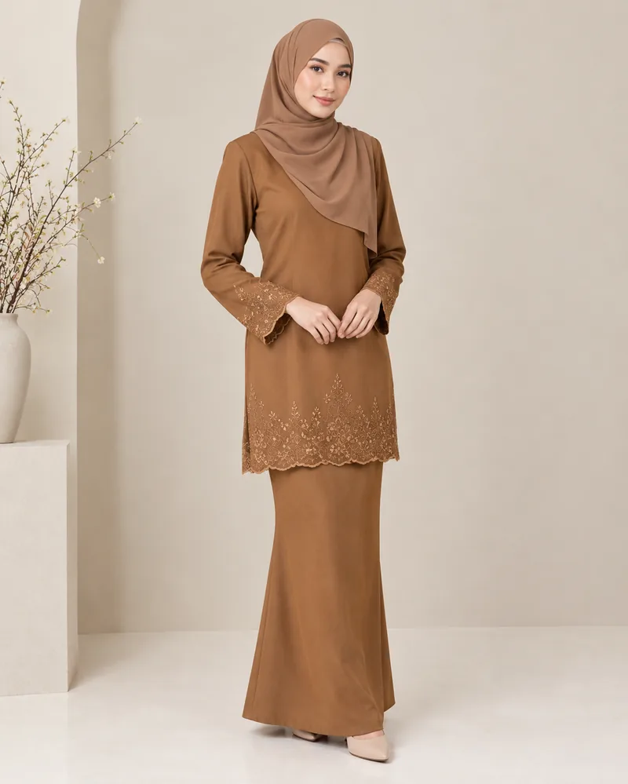
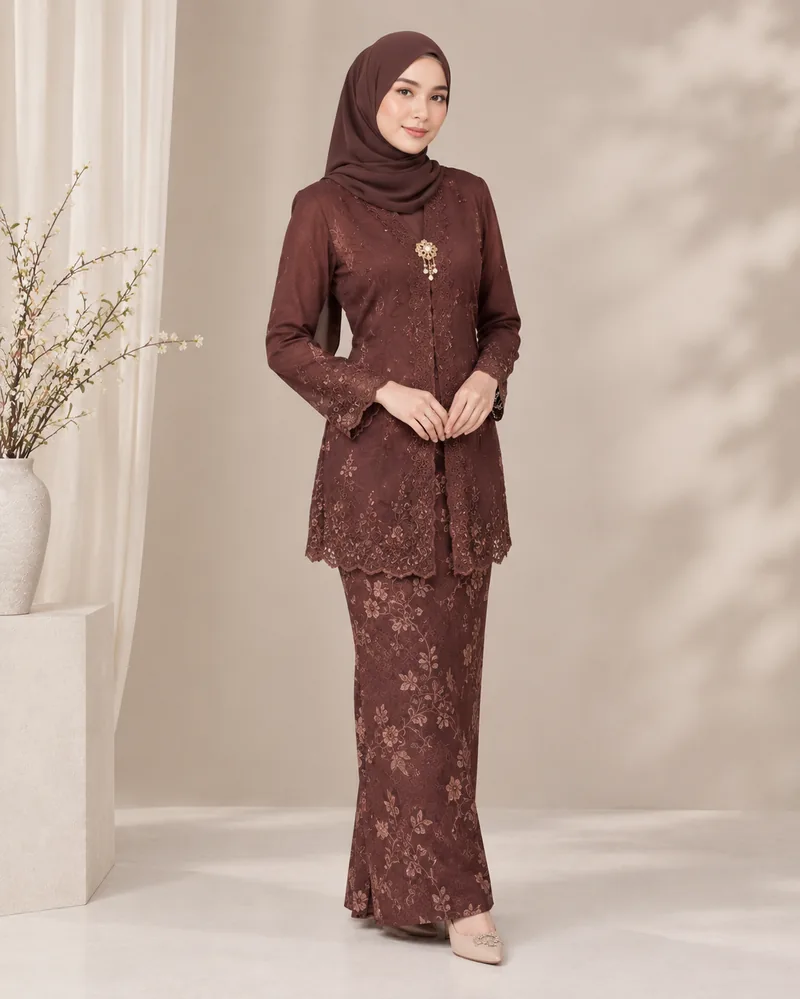
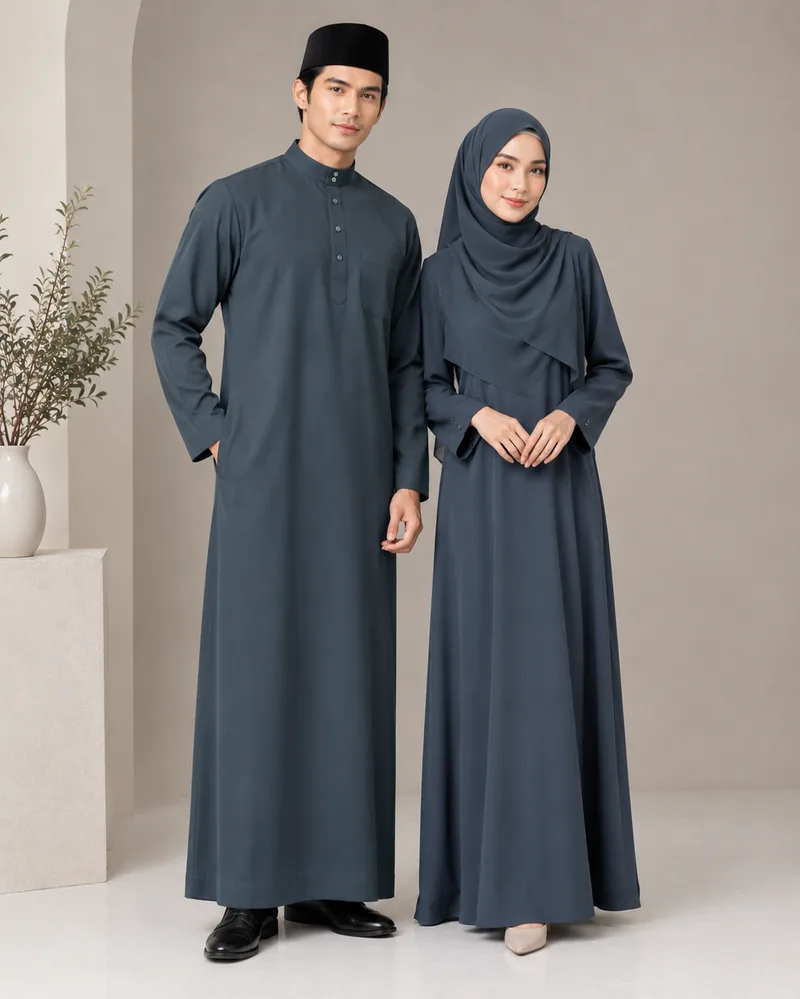
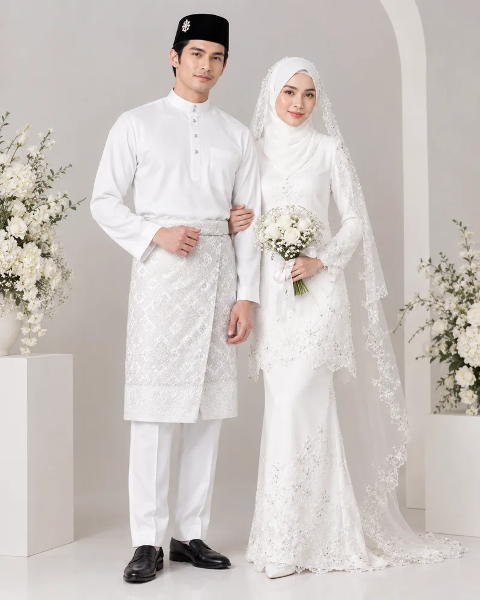
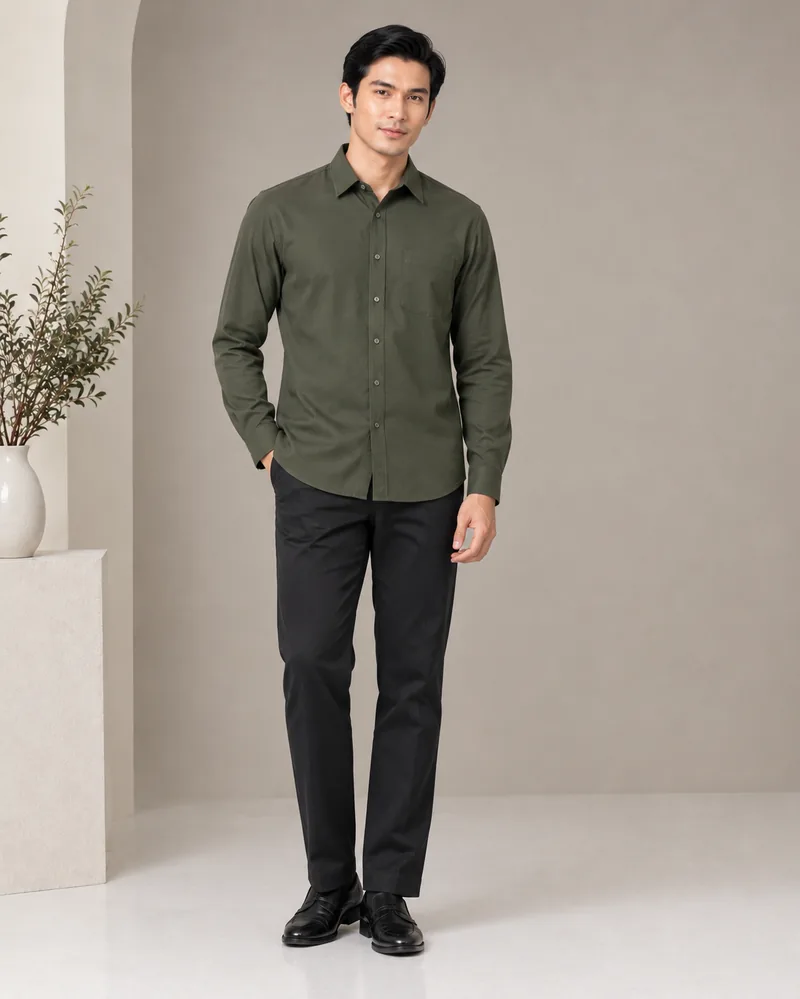
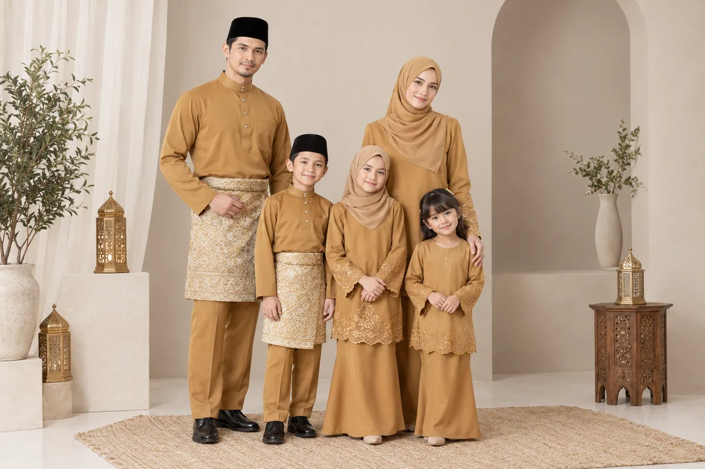

Kedai Jahit · Bukit Gambir, Tangkak
Dijahit kemas,
ikut ukuran anda.
Tiga dekad menjahit baju Melayu, baju kurung, kebaya dan jubah untuk keluarga di Tangkak dan sekitarnya. Setiap helai dipotong mengikut badan — bukan saiz kedai.
- 30
- tahun pengalaman
- 11
- jenis jahitan
- 1:1
- ukuran peribadi


Tentang Kami
30 tahun di meja jahit yang sama.
AZ Tailor bermula sebagai kedai jahit kampung di Parit Bunga Raya Hujung dan kekal begitu hingga hari ini — tempat pelanggan datang, berbual, diukur, dan pulang dengan baju yang betul-betul muat.
Kami percaya jahitan yang baik bermula dengan ukuran yang teliti. Lipatan kolar, potongan pesak, jatuhan kain — semuanya dibuat dengan tangan yang sudah biasa selama tiga puluh tahun.
- Ukuran diambil sendiri di kedai
- Boleh bawa kain sendiri
- Pengubahsuaian & alter baju
- Tempahan keluarga & sedondon
Perkhidmatan
Apa yang kami jahit
Pakaian tradisional dan moden untuk lelaki, wanita dan kanak-kanak.
- 01
Baju Melayu
Cekak musang atau teluk belanga.
- 02
Baju Kurung Klasik
Potongan tradisional berpesak, kemas dan selesa.
- 03
Baju Kurung Moden
Siluet terkini — kedut, renda, atau potongan A-line.
- 04
Jubah Wanita
Longgar, sopan dan sesuai untuk harian atau majlis.
- 05
Jubah Lelaki & Kurta
Untuk solat Jumaat, majlis ilmu dan hari raya.
- 06
Kemeja
Kemeja pejabat dan kasual, lengan panjang atau pendek.
- 07
Kebaya
Kebaya labuh, kebaya pendek dan kebaya Nyonya.
- 08
Blouse
Blouse muslimah untuk kerja dan gaya harian.
- 09
Baju Nikah
Pasangan pengantin sedondon untuk akad dan sanding.
- 10
Design Ikut Kehendak
Bawa gambar atau lakaran — kami jahitkan idea anda.
- 11
Tempahan Baju Raya
Sedondon sekeluarga. Tempah awal sebelum slot penuh.
Maklumat raya →
Cara Tempah
Empat langkah mudah
- 1
Hubungi kami
WhatsApp atau telefon untuk tanya harga dan tarikh siap.
- 2
Datang ukur
Ukuran diambil di kedai atau bawa contoh ukuran anda sendiri.
- 3
Kami jahit
Baju dipotong dan dijahit mengikut ukuran dan rekaan pilihan.
- 4
Ambil & cuba
Cuba di kedai. Jika perlu, kami betulkan sehingga muat.
Galeri
Hasil jahitan kami
Contoh gaya pakaian yang boleh kami jahitkan untuk anda.






Tempahan Baju Raya
Raya sedondon, tempah awal.
Slot tempahan raya terhad setiap tahun. Hubungi kami lebih awal untuk tempahan baju Melayu, baju kurung dan kebaya sekeluarga.
Tanya Slot Raya
Lokasi & Hubungi
Singgah ke kedai kami
Alamat
Kampung Parit Bunga Raya Hujung,84800 Bukit Gambir,
Tangkak, Johor.
Telefon / WhatsApp
- Azmah +6011-1587 0081 WhatsApp
- Aina +6013-746 4936 WhatsApp
Imbas untuk arah
Imbas kod QR dengan kamera telefon untuk buka lokasi di Google Maps.
Buka di Google Maps →